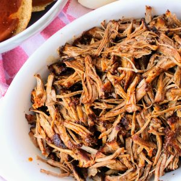
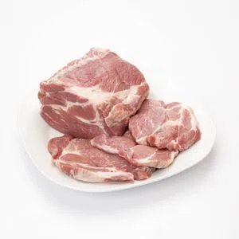

Recetas

Bondiola a la cerveza
Ingredientes
s
- Bondiola
- morron
- zanahoria
- cebolla
- Caldo de verduras
- cerveza negra
preparación
- Salpimentar la bondiola y sellarla por todos los lados en la olla
- Retirar y sofritar las verduras en la misma olla
- Una vez cocidas las verduras, volver a meter la carne y agregar caldo y cerveza hasta tapar la misma
- Dejar una hora por lado a fuego medio con la olla tapada
- Una vez pasado este tiempo, destapar para que evapore líquidos y desmenuzar la carne
ir a cuk-it
la mejor bondiola de la plata